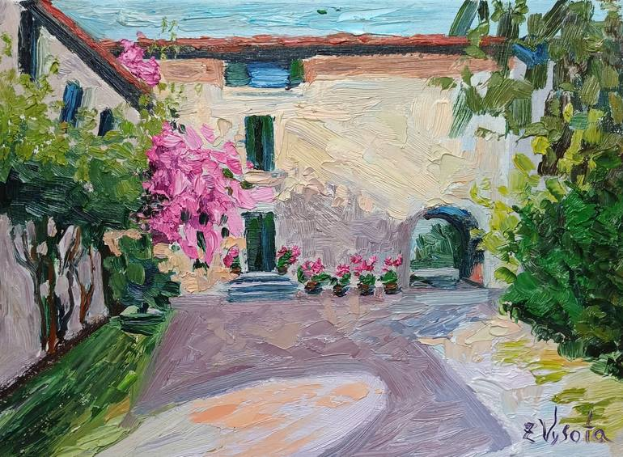

Essays
The Courtyard

The cobblestones of the aqueduct, eroded by thousands of years of footsteps, were no match for Rosa’s sturdy Italian-leather block heel. Over two miles long, the conduit originally built to transport water up the hillside dried up and carried a flow of pedestrians instead. All day, locals and visitors alike would trek up, over, and often back again, on their way to work, school, church, local shops, or the hair salon.
After reaching the piazza at the top of the hill, we ambled back down the opposing slope on Via dei Piori. Rosa held my forearm firmly against her own, our elbows bent against one another, a hallmark gesture of Italian women that conveyed an age-old message: together we are strong, don’t mess with us. Near the top of the hill, we were greeted by the sweet scent of butter, sugar, and flour cut by the sharp tang of hand-pulled espresso shots emanating from Bar Pasticerria. The clinking of tiny porcelain espresso cups dancing in their saucers sounded like welcome bells to my eager ears.
Several more meters brought us past the butcher, a bright sterile stall-like shop where the blood-red meat stood in contrast with white walls and clear glass cases. Nestled deeper into the hillside, in an ancient stone building was the Tabacchi, owned by Iris, who appeared as old as her surroundings. The lines on her face were worn as deep as the cracks in the stone walls of her shop. Well into her nineties, she would spend an incredible amount of energy over the next several months determined to make a smoker out of me. I’d eventually cave and buy boxes of St. Moritz menthol cigarettes simply because I liked the teal boxes and was scared she’d stop selling me stamps or school supplies if I didn’t cooperate and buy some tobacco.
At the base of Via dei Priori, the stately 3rd century B.C. Porta Trasimena, the city gate, stands tall. Originally believed to have transformative powers for the families that passed through, the arched passage still conveyed a sense of magic and protection. The aroma of charred semolina and salty cured meats floated in the air just beyond the gate. A small, obscure pizzeria and an even smaller bread shop were the last businesses on the street. Just beyond the pizzeria, Via dei Priori led to San Francesco al Prato Catholic Church. For a split second I caught sight of the pale turquoise copper patina marking the facade of the church, but Rosa firmly pulled me to the left, down another smaller street that continued to wind down the hill of the town.
She pointed to the blue ceramic tile embedded into the side of a building that stated, in white lettering Via del Tordo. Siamo arrivate. The small alley was named for a melodious Italian songbird called a thrush, whose gentle call has been described as both haunting and heavenly. Rosa released my arm as we rounded a narrow walled corner and discovered a tiny hidden courtyard. The doors of a handful of modest homes all opened onto this simple, charming space. The light filtered into the square, softened by the pale terracotta and ochre hues of the surrounding buildings. A few household items were scattered here and there. With the exception of a singular long wooden bench there was no furniture to fill the space, and yet, it felt like the most welcoming living room in the world.
We approached the entrance to 10 Via del Tordo and stood before a short squat wooden door. Above the door was a single window with closed green shutters. The same green shutters that flanked all the windows on the square. Rosa reached deep into the pocket of her worn duster and pulled out a long, metal, old-fashioned key which she placed in her own palms and held out for me to inspect. An offering. A talisman.
The door was a solid six inches thick and rather than a door handle, it was opened and closed by pushing or pulling a large metal ring affixed to the center of the panel. Rosa turned the key until the lock relented in a loud, satisfying, and auspicious click. The property had only recently been made available, and was slightly out of my price range, but just as Rosa had mentioned, it was perfetto. Within steps of the door was a tiny kitchen with small Italian appliances. A humble wooden table sat atop red tile floors. To the left was a small but sturdy staircase that curved steeply upward toward a single loft-style bedroom. Off the bedroom, facing the courtyard, was the bathroom. The toilet sat practically in front of the green-shuttered window that looked out upon the square. It provided barely enough space for one person.
I met the neighbors in a slow trickle. A handsome middle-aged lawyer named Alessandro lived across the courtyard and abided by a strict daily schedule. He left his house promptly at eight o’clock every morning and returned home each evening no later than six o’clock. His expensive road bike was always propped neatly to the side of his door. His home was hardly different from the others in the square, but it conveyed a sense of tidy importance with its fresh paint and shiny handle. It didn’t take long for us to strike up a polite, reserved, introductory conversation. He lived with his mother, Vittoria, and while she had difficulty getting around, she was a lovely woman who he assured me would keep an eye on things from her ground-floor window. One day after work, Alessandro shared that he had recently moved back from working in Milan to provide daily care for his mother. I felt a mix of pity and admiration for the fact that he had been forced to reorient his life in order to care for an elderly family member. I told him I was sorry to hear that, but his face registered confusion at my empathy. Ma, sorry? Perche?
Chiara I met because she loved to fling open her green shutters and scream obscenities out the window at the elderly residents who were constantly telling her to turn her music down. Her favorite word was cazzo. Several apartments on the southern perimeter of the courtyard, including hers, were accessed by one main door, so all I ever knew of Chiara’s home was her window. The laundry line which sprouted from her window every few days like a vine, provided mystery and intrigue. Ripped jeans and vintage rock band t-shirts would be replaced by bondage style lingerie. Her shutters were always a little dirty. Pot smoke or cigarette smoke, or both would come billowing out at random intervals at all times of day or night, pouring over the clothes like incense. Chiara was a university student, although she never liked to give specifics about what she was actually studying. Some days it was science, others days it was classic literature. She wore her brown hair in a closely shaved buzz cut, had several random amateur tattoos, blue eyes that rivaled the sparkling waters of the Amalfi coast, and a mischievous smile that she wielded like a weapon. Whenever she saw me her whole face would light up and she would offer to help me with anything at all in her best American accent. She fucking loved Americani! Chiara, like Alessandro, made me think about how differently we treat the elderly in the States. She spoke to everyone the same way, whether it was the ancient gentleman who lived down the way, or a toddler coming to visit family. She refused to shapeshift. Ironically, her hostile authenticity is what drew everyone toward her like moths to a flame. She believed in the universality of life on the deepest level—she assumed that everyone would go through some version of the same things in life and censorship was for liars. I was terrified of her in the very best way.
Moreno lived directly next door and I heard him, always, before I saw him. Moreno’s house was as eccentric as he was. He affixed different planters and decorative elements to every precarious ledge on his house. He constantly swapped out welcome mats and nesting tables outside his front door. He adorned himself in similarly eclectic ways, always clad in a bohemian-style scarf or a not-quite-stylish hat.
Moreno had an outdoor cat, named Menush, that he would call for nightly as he placed leftover pasta in ceramic bowls on the stoop for the cat to eat for dinner. I’ve never been a big fan of cats, to be honest I genuinely disliked them, but I did feel bad when Moreno sullenly informed me one day that Menush had been gone for a few weeks. He wasn’t worried she was gone forever, he just missed her, he said through unstable tears. Menush came back pregnant and was refusing to eat. As her hunger strike wore on, even I couldn’t deny poor Menush. On my way home one afternoon, I stopped and bought a few cans of dusty over-priced cat food and an extra shelf-stable box of milk. Within moments of putting down the saucer on my stoop, Menush was feasting away. The next night, Menush was patiently waiting on my stoop, eager for another meal. Moreno stopped me the following morning, and sheepishly admitted he had no idea they sold cat food in stores. He wanted to know where I got the idea to try milk. Unsure how to answer, I asked what he thought cats should eat. He very seriously replied that in Italy cats eat pasta, of course. A couple weeks and many tins of food later, I pulled open my heavy wooden door to find Menush and four newborn kittens huddled together in the dewy morning fog, mewing for some fresh milk. It was official, I had become the resident cat lady.
Moreno insisted on repaying my generosity by sharing bottles of his thick, creamy, strong homemade limoncello. We’d sit at his table or in the courtyard, always with the door open, and he’d regale me with tall tales of his life before Via del Tordo. He’d claim that he worked as an antiques dealer, a night club owner, a fencing coach, you name it. I could never be sure if he was telling the truth or not. Often he’d stop in the middle of a story to have a dramatic cry. The neighbors eventually rolled their eyes each time the stories grew more and more outlandish. I decided it didn’t matter if the stories were real or not.
A pair of sisters, probably in their late fifties, lived just beyond Moreno’s home, near the entrance to the square. They didn’t approve of Moreno and they made it known by calling the cops on him whenever possible. The cops would arrive, pat the women gently on the shoulder, share a glass of wine with Moreno in the courtyard and eventually leave. For the most part, the sisters kept to themselves and rarely spared a smile for anyone. I never knew their names, but I knew they loved the color sage green. Their front door was painted in a way that made it look like the entrance to a woodland fairy’s home. They almost always left the house wearing verdant clothes, hats, gloves, or scarves. I knew nothing about them or the lives they lived, but on slow days I liked to imagine that they had both been in love with Tomasso, who lives a few doors down in the opposite direction. In my boredom, I’d invent stories of my own about just-missed glances that passed between him and the older sister. In reality, Tomasso was a grumpy recluse who only shared affection with his small dog. It was a universally acknowledged agreement among all the neighbors that the empty wine and liquor bottles that collected on his stoop were never to be discussed. When the pile grew too large, one or many of us would inconspicuously grab a bottle on our way out of the courtyard and pop it in the recycling bin.
Across the square, adjacent to Alessandro and Vittoria, was a couple in their thirties with an eight-year-old daughter. The mother, Giulia, was a nurse, and the father, Lorenzo, was a firefighter. Their precious daughter was named Ama, and she kept the courtyard alive. Giulia would chastise her so gently about leaving her little toys, rollerskates, and art supplies scattered around the common space, but anyone listening in would promptly come to her defense with cries to let the little girl live free. One night in the courtyard, the couple shared with me that Ama was conceived after several miscarriages and a still birth. The night she was born alive and well, they told me with tears in their eyes, was the night they finally felt like they had proof of all the love that had come before and all the love that was yet to be.
Every day, in the middle of those stone walls, surrounded by my neighbors, I delighted in new discoveries. The courtyard on Via del Tordo was the singular thing I was most grateful for that year. So, when the cold of November rolled in, and I could no longer comfortably sit on top of my toilet seat and chat through my open shutters with Chiara or any of the passersby down below, I began to grow lonely. Homesickness settled in alongside the cold. Moreno started blasting John Lennon’s War is Over on repeat so loudly and the stone wall that separated us felt like it would crumble with every repetition of “So this is Christmas, and what have you done?” It just didn’t feel right to move along to Christmas and skip Thanksgiving all together. I had so much to be thankful for and I longed for the comfort of the holiday.
Via del Tordo would have its first-ever Thanksgiving. I heard the church bells as I trudged past the steamy pizzeria, under the Porta, and up the hill. Iris’s deep, scratchy voice chastised me as I passed her Tabacchi. Smoking will keep you thin! The cool toned glow of the butcher shop looked promising. I stepped forward and bravely repeated the phrase in Italian I had been practicing in my head the whole way up the hill. Mi piacerrebe comprare un tacchino grande per favore. The butcher’s expression fell, he jutted out his chin and lifted his hands, palms up, to explain to me that no, I did not want to buy a turkey. Turkey is dry and it won’t taste good. Why not buy veal? So tender. I did my best to explain to him the tradition of roasting a turkey for Thanksgiving holiday, and he did his best to let me know that my homeland had, year after year, chosen the wrong type of meat to serve to convey gratitude. Eventually, he relented and agreed to order one. A twelve-pound, dry, sad turkey would be ready for pickup two days before Thanksgiving.
I began to invite the neighbors, one by one. Soon, it was all anyone talked about in the courtyard. American food! Chiara would kick at the steps while dragging on her cigarette and complain that I wasn’t planning to make cheeseburgers. Sweeping her front steps, Vittoria offered to make dessert. When I let her know that I would be making pumpkin pie, she made the same face as the butcher. No, Carina, the pumpkin is for soup. Moreno constantly chided the fact that my mom had agreed to send a package filled with Thanksgiving staples from America. When the box arrived, however, he insisted on carrying the box across the threshold when it was delivered and hovered, calling out in amazement, as I lifted out boxes of stuffing and cans of cranberry sauce. The words Stove Top made him giggle and for the next week he’d yell them whenever he saw me. The bags of potatoes I had to bring home one or two pounds at a time because I could only carry so much down the hill on any given trip. Vittoria spotted me lugging them home through her window. Alessandro relayed the message that I was to wrap them in a towel or blanket and keep them in the courtyard in a basket from Vittoria. They would keep best that way.
Thanksgiving Day was clear and cold, but my apartment had never been more warm. The small oven was fired up within minutes of my waking. I started with the pies, then prepped the sides, and eventually put my Italian turkey, the first I have ever cooked on my own, into the oven. I heard the church bells chime in the distance and said the prayer on every Thanksgiving chef’s lips. Dear God, please don’t let me screw up the turkey.
At dusk, I pulled open my heavy door and saw my neighbors, scattered around the courtyard, dressed for a fancy dinner party. One by one, they stepped forward and gave me a kiss on each cheek. I invited them to walk through my tiny house and help themselves to the food. Friends I had made in the preceding months joined as well, contributing pilfered cutlery and mismatched plates from their own rentals. My German and Swedish friend chose the party to make it official, to no one’s surprise, that they were more than friends. Rosa, who had faithfully checked on me many times that fall, unconvinced that I was fine, registered with surprise how warmly I had been welcomed by everyone. She brought Francesco Jr., her son with her. After months of recommending that I marry him and bragging about his job in business that paid him so well, I finally met him. I immediately recognized him as one of the male stage dancers at a busy nightclub in town. Through laughter that threatened tears I had to explain to my friends that they could not say a word about recognizing him. It would break his mama’s heart. Rosa asked what there was to laugh about and told me it wasn’t funny how badly I’d overcooked the green beans.
I have no idea how the tables made their way outside, but at some point in the night, I looked around and noticed that someone had strung lights from one corner of the square to another, and there were a couple wooden tables I had never seen before. At one of them, the sisters in green were chatting amiably with Tomasso, the evening’s self-appointed sommelier. I was so used to seeing him grumbling at his dog, that I barely recognized his clean-shaven smile and upright posture.
I leaned against the doorway of my cozy little home and noticed that the acoustics of the courtyard were particularly beautiful. The walls carried the lilting song upward, into the night sky, a gorgeous offering of gratitude. Across the way, Vittoria appeared at her doorway. I saw her cross that threshold exactly once. Her tiny frame labored with each step, but she slowly made her way over to me. She smiled, held my face in her wrinkled hands and called me the happy American girl, before giving each cheek a gentle kiss.
The evening confirmed for my neighbors that Americans knew nothing about food. Regardless, we all agreed it was the best Thanksgiving Italy has ever had.
The weather continued to grow colder, our time in the courtyard was a receding tide and Moreno was the child chasing it out to sea. He’d keep his door open and find excuses to pop out and ask questions or offer help. Eventually, the Christmas songs next door blared louder, and his emotional episodes did too. Late at night, I could hear his sobs compete with John Lennon’s voice through the wall.
I hadn’t seen Moreno for weeks, so a few days before Christmas, I knocked on his door. His door opened slowly. A gaunt face and stooped figure that barely resembled the wild man I’d known him to be. I awkwardly held out the box of cookies from the pasticceria, but he held up one hand in refusal while placing his other on his stomach and shaking his head. His voice was barely above a whisper when he told me about his illness, and I didn’t understand the Italian word for it. I didn’t understand until he translated and told me he had AIDS. Treatment had stopped working. He had lost his appetite entirely. He was, he told me sadly but resolutely, resigned to his fate.
Christmas was quiet on Via del Tordo. Many of the neighbors were out of town celebrating with family. Chiara was accepted into a program in Kenya, and Moreno’s walls were quiet and still.
When it came time for me to say my goodbyes, I made my way around the courtyard, knocking on each door, delivering heartfelt thank yous, and faithfully writing down each person’s name and contact info in a leatherbound notebook I had bought at Iris’s shop. The promise to see each other again echoed off the stone walls. Still no answer came from Moreno’s door—one of the green sisters told me he was traveling until spring. I asked after his health and I watched as her shoulders shrugged under her green sweater. She didn’t believe he was sick. I locked my door for the final time and slipped the key I had begged Rosa to let me keep in my pocket. Before rounding the narrow corner back out onto the street, I cast one last glance back at the courtyard. It looked smaller somehow.
Later that same day, at the main train station in Rome, I was robbed. I lost everything except my passport and the large key, which had been in a pouch around my neck. The digital camera with all the photos I had taken of that Thanksgiving were gone. The notes I had diligently written each night in my diary, gone. The little leather book with the email addresses and formal names of my beloved neighbors and friends, gone. My computer, plane ticket, money, all gone.
I take the key out of an old box every Thanksgiving. I feel its heavy weight in my palm and remember with gratitude the people and place that taught me what it takes to build a life. More than twenty years later, I live in a multi-generational home with my parents and my children. Our home has a beautiful stone courtyard.
Laura Larkins is an MFA Candidate in Creative Writing at Harvard University. She currently lives and writes in Denver, Colorado.